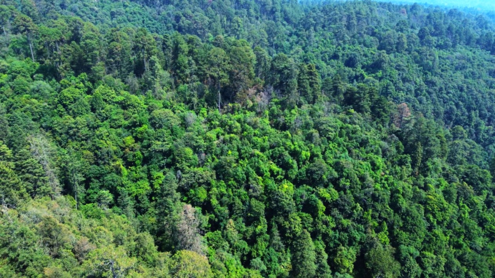
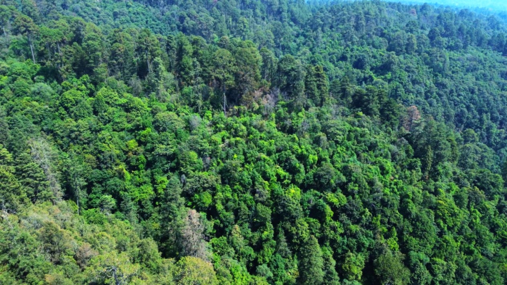

Soy un profesional del sector forestal apasionado por la naturaleza y comprometido con su conservación. Desde 2019, he trabajado como especialista en impacto ambiental, desarrollando estrategias de diagnóstico y prescripción. También cuento con experiencia en muestreo de vegetación, aplicando metodologías avanzadas para la recopilación y análisis de datos ecológicos. Mi formación académica incluye una Ingeniería Forestal y una Maestría en Ciencias Forestales, con un enfoque en hidrología, ecología del paisaje y del fuego, áreas en las que he centrado mi trabajo de investigación en la Sierra de Guadalupe. Actualmente, curso el Doctorado en Ciencias de Información Geográfica, donde me especializo en tecnologías avanzadas como el análisis de datos LiDAR, que permiten abordar desafíos complejos relacionados con la gestión y conservación de los recursos naturales.
- 📊 Análisis de datos (espacial y estadístico)
- 🌧️ Hidrología forestal
- 🌳 Manejo forestal
- 🔥 Ecología del fuego
- 🛠 Evaluación de impacto ambiental
- 🌐 Procesamiento de datos geoespaciales
Galería de Imágenes
 
